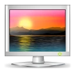
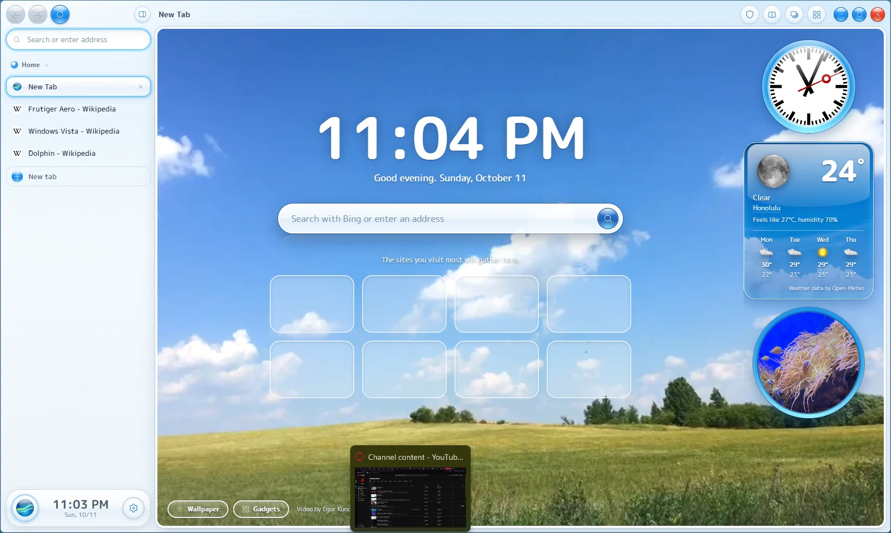
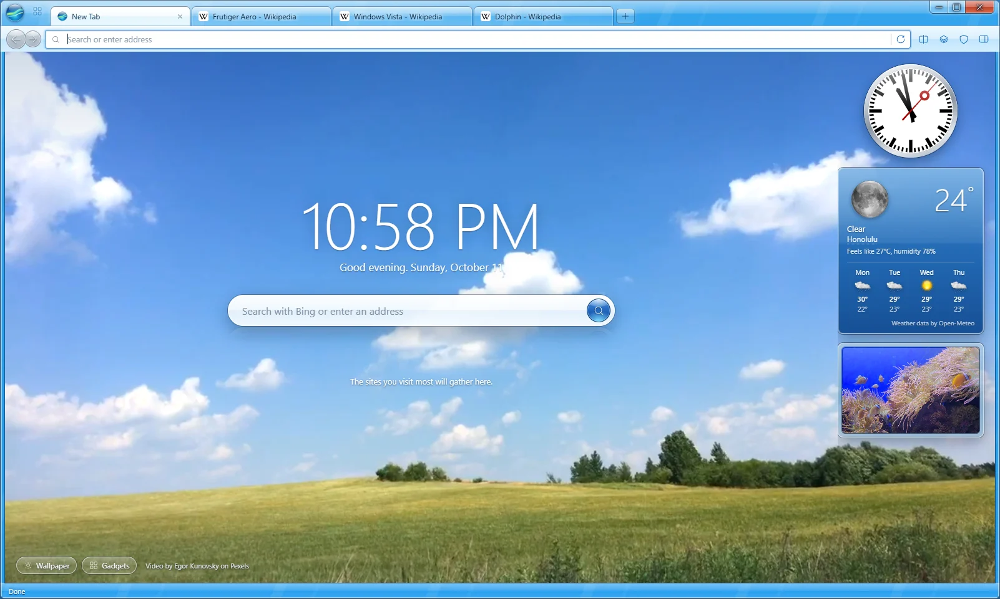
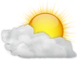
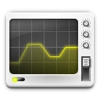
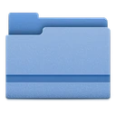
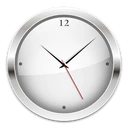
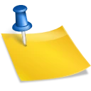

Live wallpapers
New tabs open on real looping footage: dolphins, rain on glass, wind farms, northern lights. Or add your own photos and videos.
Remember the future.
A web browser for Windows that looks the way the 2000s said computers would look: glossy, bright and full of sky.
Free and open source. Windows 10 and 11, 64-bit.

Seventy-seven seconds. Turn the sound on.
Pick one in Settings. Switch whenever you like.


New tabs open on real looping footage: dolphins, rain on glass, wind farms, northern lights. Or add your own photos and videos.

A railway clock, weather, a slide show, news headlines, currency rates with a green LCD, a fishbowl and sticky notes. Keep them on new tabs or in a panel beside any page.

See every open tab as a tilted stack you can scroll through, or as a searchable grid.
Built in, with HTTPS-First and Global Privacy Control. Turn it off per site in one click.
Known phishing and malware sites get a red stop page. The check runs on your computer, so the sites you visit never leave it.
Add them straight from the Chrome Web Store. Their buttons and popups work like they do in Chrome.

Keep work and fun in separate sets of tabs, and put two pages side by side.

Tabs you haven't looked at in a while go to sleep and free their memory. They wake up right where you left them.

Reader view, screenshots, QR codes, picture-in-picture, a feed reader, a media player in the status bar, a pop-up blocker and a Welcome Center.
Download the installer from the latest release.
Run it. Windows may say it doesn't recognize the app, because the installer isn't code-signed yet. Click More info, then Run anyway.
The Welcome Center opens on first start. Bring your favorites over from Chrome, Edge or Brave in one click.